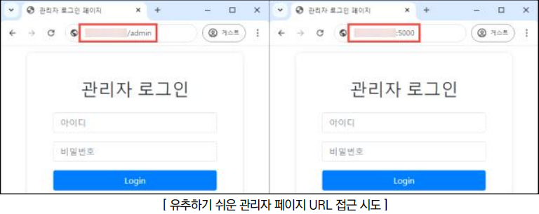
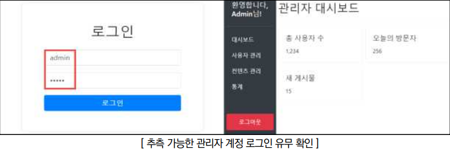

점검 목적
- 유추 가능한 URL 또는 설계상의 오류로 인해 관리자 페이지 및 메뉴에 접근 가능 여부 점검
- 관리자 페이지의 URL을 추측하기 어렵게 설정하고, 웹 사이트 설계 오류를 수정하여 비인가자의 관리자 메뉴 접근을 방지하기 위함
판단 기준
양호 : 유추하기 쉬운 URL로 관리자 페이지 접근이 불가능한 경우
취약 : 유추하기 쉬운 URL로 관리자 페이지 접근 또는 계정 로그인이 가능한 경우
조치 방법
- 유추하기 어려운 이름(포트 번호 변경 포함)으로 관리자 페이지를 변경하여 비인가자가 접근할 수 없도록 하고, 근본적인 해결을 위해 지정된 IP만 관리자 페이지에 접근할 수 있도록 제한함. 단, 부득이하게 관리자 페이지를 외부에 노출해야 하는 경우, 관리자 페이지 로그인 시 2차 인증(OTP, VPN, 인증서 등)을 적용
점검 방법
Step 1) 유추하기 쉬운 URL, 포트 등 접속을 시도하여 관리자 페이지가 노출되는지 확인

Step 2) 추측하기 쉬운 관리자 계정(admin, adm, administrator, manager 등) 및 비밀번호를 입력하여 로그인 가능한지 확인

조치 방법
1. 일반 사용자의 접근이 불필요한 관리자 로그인 페이지 주소를 유추하기 어려운 URL 및 포트로 변경
2. 관리자 페이지에 접근 가능한 IP를 지정하여 지정된 IP만 관리자 페이지에 접근 가능하도록 제한
3. 부득이하게 관리자 페이지를 외부에 노출해야 하는 경우, 관리자 페이지 로그인 시 2차 인증(OTP, VPN, 인증서 등)을 적용
4. 지정된 IP만 관리자 페이지에 접근 가능하도록 제한관리자 페이지의 하위 페이지 URL을 직접 입력하여 접근하지 못하도록 페이지 별 세션 검증 필요